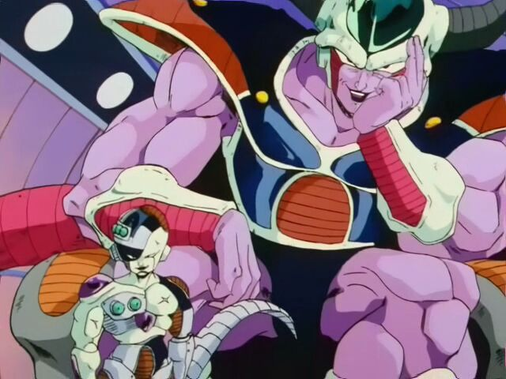
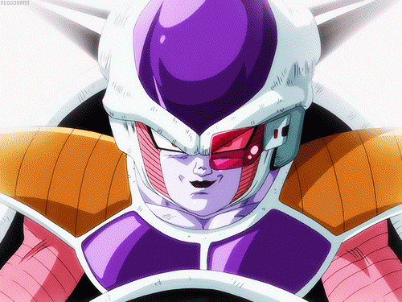

Historia de raza
┌─────── ∘°❉°∘ ───────┐
Los demonios del frío son originarios del planeta Chanlong, también la raza a la que pertenece Freezer y bien una de las más poderosas del universo.

└─────── °∘❉∘° ───────┘
Apariencia
Son similares a los reptiles, son bastante bajos, sus ojos son rasgados y rojos, tienen labios color negro(no creo que sea natural...), tienen una cola similar a la de las lagartijas, poseen una especie de "cristal" principalmente en cabeza y/o pecho además de otras partes del cuerpo y sus pies tienen 3 dedos.

Poder(jerárquico)
Digamos que los Demonios del Frío fueron seres de alto poder ya que dominaban la Organización Interplanetaria de Comercio y con esta a razas enteras tal como lo fue la raza saiyajin.
Poder(físico/batalla)
Como ya mencione, esta raza es realmente fuerte(sobra con lo que ya sabemos para notarlo) e increíblemente longeva... Algo así como las cucarachas xD; recordemos que Freezer sobrevivió partido a la mitad por un buen rato(y hubiera continuado creo yo), cosa que sería imposible para las razas que ya conocemos

Su poder es tal que necesitan reprimirlo en diferentes fases y tan grande que puede destruir planetas enteros con una sola ráfaga de ki o con un solo golpe.En ambos físico como de energía, los Demonios del Frío son muy resistentes.
Transformaciones
Se viene lo buenoooo! Las transformaciones de esta raza son muy camaleónicas; realmente diferentes una de la otra y esto es una cualidad interesante.
1era Forma
Es la primera con la que se nos introdujeron los Demonios del Frío. Aquí la estatura es baja, cuernos relativamente pequeños y rectos, parecen tener una especie de coraza, ciertas partes de su cuerpo tienen cierto color "durazno", y al final de su cola parece haber un aguijón. También es algo "escurridiza"

2da Forma
En esta la pesadilla va creciendo. Los cuernos se hacen más grandes y giras hacia arriba con un ángulo de 90°, la estatura aumenta al igual que la masa muscular, la fuerza (física y en los ataques) se incrementa aunque pierde velocidad. Aun en esta varios de los miembros de esta raza la mostraron.

3ra Forma
Se nos deformó todo aquí :v. La cabeza se alarga hacia atrás, los cuernos se convierten en 4 que se distribuyen en 2 hileras a lo largo de la cabeza, pierden la nariz y su velocidad aumenta

Última Forma/Forma original
En está su apariencia de reptil es bastante grande. La coraza/armadura desaparece, los cuernos ya no están, su cola "pierde" el aguijón y todo en ellos se multiplica.

Al 100%
Aquí la fuerza de la última forma llega a su límite. La musculatura se hace mas grande pero pierde energía a cada momento porque el cuerpo no puede resistir la cantidad de fuerza que se le exige.

Golden Freezer
Esta transformación sólo la ha alcanzado Freezer y es una evolución de la última forma. No cambia mucho (en el ámbito físico), el cambio más notorio es el color principal que ahora es dorado. Esta transformación tiene una peculiaridad y es que al parecer cada quien puede escoger el color. Su poder se incrementa mucho pero le sucede lo mismo que la "Última Forma al 100%" pero únicamente si el sujeto no está acostumbrado a utilizarla.